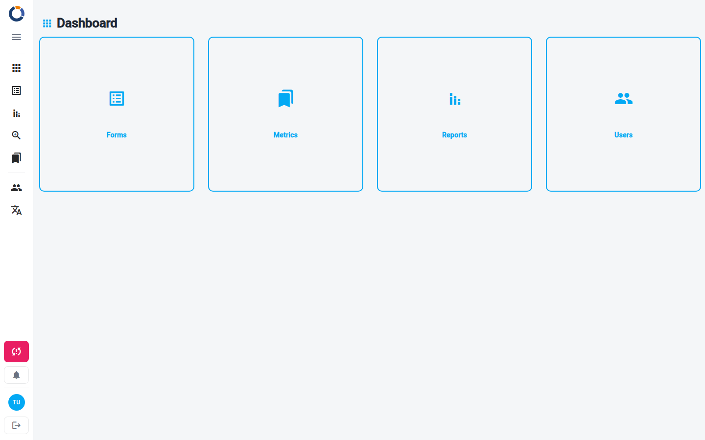
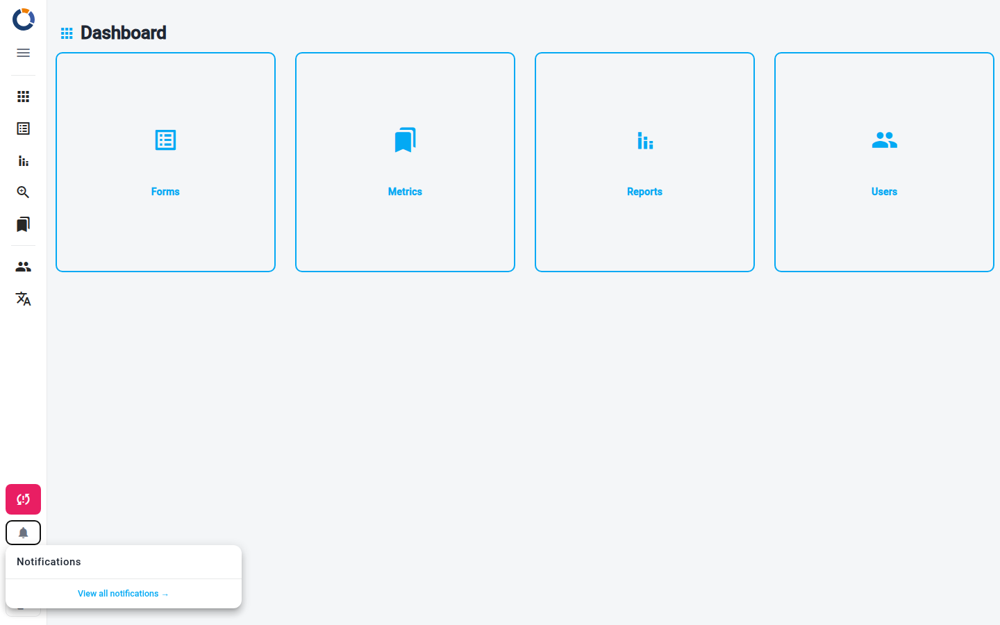

Navegación e interfaz
Después de iniciar sesión, todas las páginas de Dino están enmarcadas por una barra lateral a la izquierda. En ella se encuentra la navegación entre las áreas de la aplicación y, en la parte inferior, la sincronización de datos, las notificaciones y tu tarjeta de usuario.

La barra lateral
En la parte superior de la barra lateral están el logotipo y el botón de menú, que expande la barra lateral para mostrar los nombres de las secciones o la contrae para dejar solo los iconos.
Menú contraído
Cuando la barra lateral está contraída y solo muestra los iconos, pasa el cursor sobre un icono para ver el nombre de su sección como información sobre herramientas.
En un teléfono o una pantalla pequeña, la barra lateral está oculta. En su lugar, una barra delgada en la parte superior de la página muestra el botón de menú, que abre la barra lateral sobre la página, el logotipo y el botón de sincronización.
Secciones
La navegación enumera las áreas de Dino que puedes usar. Cuáles aparecen depende de cómo esté configurada tu instancia de Dino y de tus permisos.
Secciones de usuario, bajo el encabezado Usuario:
| Sección | Descripción |
|---|---|
| Dashboard | La pantalla de inicio. Consulta Dashboard. |
| Forms | Formularios de recogida de datos y datos enviados. Consulta Forms. |
| Reports | Informes generados. Consulta Reports. |
| Aggregation | Vista unificada de los datos enviados en todos los formularios. Consulta Aggregation. |
| AI | El asistente DinoAi, cuando está habilitado para tu instancia. |
| Metrics | Datos de referencia (proyectos, posiciones, organizaciones, etc.). Consulta Metrics. (Oculto para usuarios solo invitados). |
Secciones de administración, bajo el encabezado Administración, visibles solo para administradores:
| Sección | Descripción |
|---|---|
| Users | Cuentas de usuario y grupos de permisos. Consulta Users. |
| Languages | Gestión de la traducción de la interfaz. Consulta Managing Languages. |
Tu instancia puede mover algunas secciones, como Metrics, Reports o Aggregation, entre las secciones de administración. Cuando la barra lateral está contraída, los dos grupos se separan con una línea en lugar de sus encabezados.
Sincronización de datos
Dino mantiene tus datos en el dispositivo y los sincroniza con el servidor en segundo plano. El botón Sincronizar en la parte inferior de la barra lateral muestra el estado actual y, cuando la barra lateral está expandida, la hora de la última sincronización completada (o Nunca sincronizado). Haz clic en él para iniciar una sincronización.
| Botón | Significado |
|---|---|
Icono sync |
Todos los datos están actualizados. |
Icono sync girando |
Hay una sincronización en curso. |
Icono sync_problem en un botón de color |
Tienes cambios locales que aún no se han sincronizado. Haz clic para sincronizarlos. |
Insignia ! en el icono |
Se encontró un problema durante la última sincronización. Consulta tus notificaciones para obtener más detalles. |
Icono sync_disabled, Sin conexión |
El dispositivo está sin conexión; la sincronización no está disponible hasta que vuelva la conexión. |
Cuando finaliza una sincronización, aparece brevemente un mensaje en la parte inferior de la pantalla:
- "Sincronización completada" — todos los datos se sincronizaron correctamente.
- "Sincronización completada con errores. No se pudo sincronizar: [elementos]. Consulta tus notificaciones." — una o más colecciones de datos no se pudieron sincronizar. También se crea una notificación en tu lista de notificaciones.
Sesión caducada
Si tu sesión ha caducado, la sincronización se detiene y el botón de sincronización muestra sync_problem. Tus datos permanecen en este dispositivo. Haz clic en el botón: Dino intenta renovar la sesión y, si no puede, ofrece Ir a la página de inicio de sesión, manteniendo los datos en este dispositivo, o Más tarde. Inicia sesión de nuevo con la misma cuenta para sincronizar los datos.
Botones de utilidad
Debajo del botón de sincronización, una fila de botones pequeños da acceso a:
- Nueva versión — aparece un icono de descarga cuando hay una nueva versión de Dino lista. Haz clic en él para recargar la aplicación y aplicar la actualización.
- Notificaciones — la campana, con una insignia que cuenta tus notificaciones no leídas. Consulta Notificaciones a continuación.
- Modo claro / oscuro — un botón de sol y otro de luna. Se muestran cuando la barra lateral está expandida y en pantallas pequeñas; también puedes cambiar de modo desde el Área de usuario.
- Créditos de Dino-AI — una insignia con tus créditos de IA restantes, que se muestra solo cuando DINO-AI está configurado para tu cuenta. Haz clic en ella para abrir la pestaña de IA del Área de usuario.
Notificaciones
Haz clic en la campana para abrir el panel de notificaciones. Su encabezado muestra cuántas notificaciones no se han leído. Las notificaciones se agrupan por día, cada una con su antigüedad, y los mensajes repetidos se contraen en una sola fila con un contador (por ejemplo, ×3).

Desde el panel puedes:
- Hacer clic en una notificación para marcarla como leída. Si enlaza a algún lugar de Dino, indicado por una flecha a la derecha, el clic también te lleva allí.
- Marcar todo como leído — se muestra cuando hay notificaciones no leídas.
- Ver todas las notificaciones — abre la página completa de Notificaciones.
Tarjeta de usuario y menú
En la parte inferior de la barra lateral, la tarjeta de usuario muestra tus iniciales, tu nombre y una línea con tu rol, el idioma de la interfaz activo y la versión de Dino. Haz clic en la tarjeta para abrir el menú de usuario:
- Área de usuario — tu página de cuenta, para cambiar tu contraseña, ver tu clave y créditos de DINO-AI, personalizar el tema y más. Consulta Área de usuario.
- Idioma — elige el idioma de la interfaz.
- Ayuda — un enlace a las directrices configuradas para tu instancia, cuando las haya.
- La información de compilación de la instalación.
Cerrar sesión
Haz clic en el botón Cerrar sesión junto a tu tarjeta de usuario. Dino siempre pregunta qué hacer con los datos de este dispositivo:
- Salir y borrar los datos — finaliza la sesión y elimina todos los datos locales de este dispositivo.
- Cerrar la sesión y mantener los datos — finaliza la sesión y te lleva a la página de inicio de sesión, manteniendo los datos en este dispositivo para tu próximo inicio de sesión.
- Cancelar — permanece con la sesión iniciada.
El botón Cerrar sesión aparece atenuado y no se puede usar mientras hay una sincronización en curso o cuando el dispositivo está sin conexión.
Datos aún no sincronizados
Los datos que aún no has sincronizado existen solo en este dispositivo: si los eliminas al cerrar sesión, se pierden para siempre. Si no estás seguro, sincroniza primero o elige Cerrar la sesión y mantener los datos. Iniciar sesión más tarde con una cuenta diferente también los elimina: consulta Logging In.